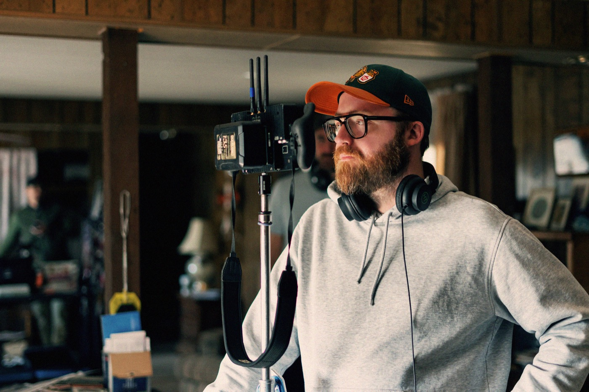

Writer, Director, Photographer
David Drake is a self-taught American writer, director, and photographer based in Norwich, UK. His debut feature The Long Haul, starring Margo Martindale, Cole Sprouse, and Stephen Root, premiered at the 2026 Tribeca Festival. In addition to his filmmaking, he works as a script consultant, mentor, and runs screenwriting workshops online. As a photographer, David created album covers and imagery for artists like The 1975, Tom Grennan, Kele Okereke, and Glass Animals. His photos have been published widely online and in print.

Photo by Daniel Costa.